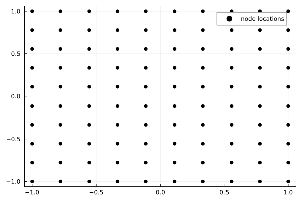
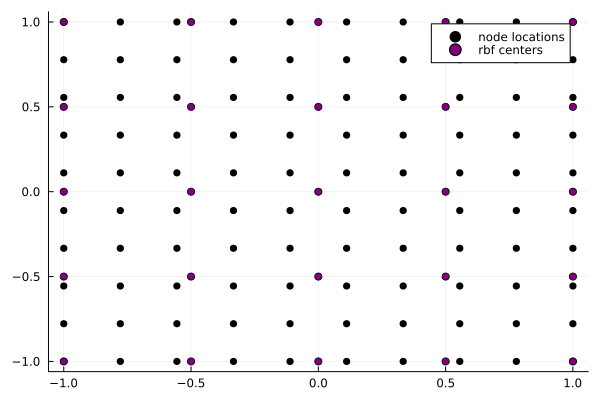
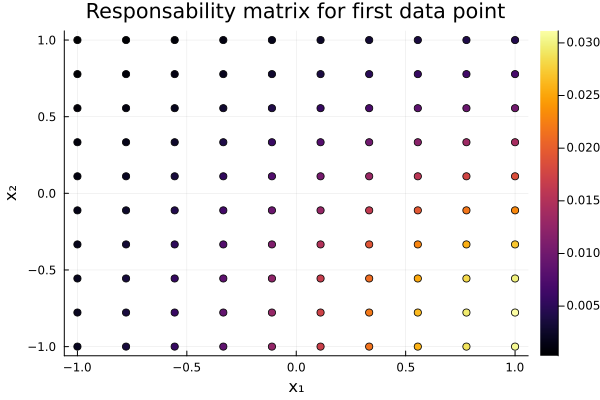
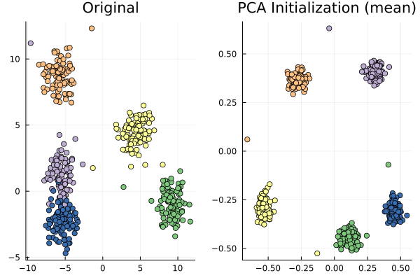
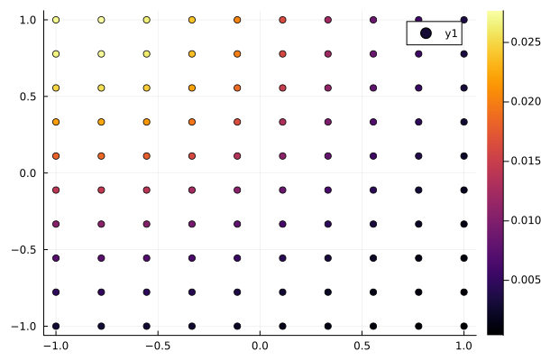
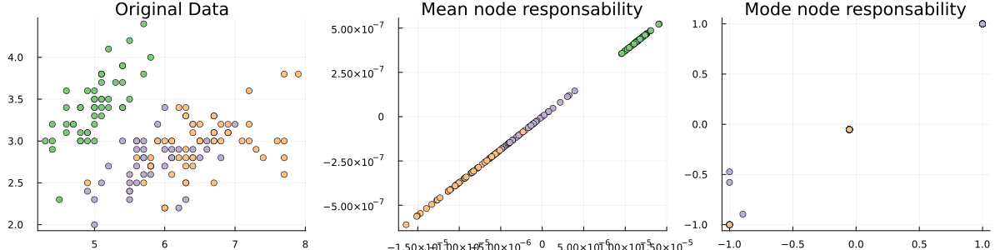

using Pkg
Pkg.activate(".") Activating project at `~/gitrepos/machine-learning/GTM.jl/notes`Goal: We want models that can find interesting structures in un-structured data without the need for human labeling or intervention. The key feature of many such methods is that they perform Dimensionality reduction. Data in some high dimensional feature space are assumed to truly be living on a lower dimensional submanifold of the higher dimensional space. If the goal is to visualize interesting structures in the data, typically, we chose the dimension of the reduced data to be 2, or 3.
Generative Topographic Mapping assumes that our large dimensional dataset \mathcal{D}\subseteq \mathbb{R}^D is actually generated by a set of latent variables living in \mathbb{R}^L. For visualization, we will typically choose L=2, but strictly speaking, we require only that L<D. Our goal then is to learn the mapping from latent variables to our data space.
| Notation | Description | Notes |
|---|---|---|
| \mathbf{x}\in\mathbb{R}^L | Latent vector | |
| \mathbf{t}_n \in \mathbb{R}^D | Data vector | n=1,..., N |
| \mathbf{y}=\mathbf{y}(\mathbf{x};w) | latent vector transformation | \mathbf{y}:\mathbb{R}^L\mapsto\mathbb{R}^D |
| w | vector/matrix of weights for the mapping transformation |
The GTM is a principled expansion of both Factor Analysis (the linear latent variable model) and the Self Organizing Map (aka Kohonen Maps).
To expand the capabilities of factor analysis to consider nonlinear transformations of latent vectors, we consider the underlying distribution \begin{equation} p(\mathbf{t}\vert \mathbf{x},w,\beta) := \mathcal{N}(\mathbf{y}(\mathbf{x};w), \frac{1}{\beta}) \end{equation} i.e. the embedded (transformed) latent vectors are normally distributed with mean given by \mathbf{y} and covariance \beta^{-1}. Provided we have some knowledge of the distribution of latent vectors p(\mathbf{x}) (aka the Bayesian prior), we can then integrate to obtain
\begin{equation} p(\mathbf{t}\vert w, \beta) = \int d\mathbf{x}; p(\mathbf{t}\vert \mathbf{x},w,\beta)p(\mathbf{x}) \end{equation}
This is what we really want: the distribution of our embedded data \mathbf{t} given the parameters of our model w and \beta. Unfortunately, this integral is not tractible without a nice model for p(\mathbf{x}). We therefore take inspiration from the Self Organizing Map which models latent vectors as the nodes of a topologically connected mesh. Thus, we form
\begin{equation} p(\mathbf{x}) := \frac{1}{K}\sum_k^K \delta(\mathbf{x}-\mathbf{x}_k) \end{equation}
In words: the latent dataspace is described by K vectors \mathbf{x}_k which lie preciesly on the nodes of a regular mesh. For any latent vector \mathbf{x}, there is a probability of 1/K that it came from the k^{th} vector \mathbf{x}_k.
As mathematicians (or physicists, or data scientists, etc…) we rejoice at the site of the Dirac-\delta functions which greatly simplify our integration. Our embedded data distribution now becomes: \begin{align} p(\mathbf{t}\vert w,\beta) &= \int d\mathbf{x}\; p(\mathbf{t}\vert \mathbf{x}, w, \beta) \frac{1}{K}\sum_k^K \delta(\mathbf{x}-\mathbf{x}_k) \\ &= \frac{1}{K}\sum_k^K p(\mathbf{t}\vert \mathbf{x}_k, w, \beta) \end{align} which is much, much nicer to deal with.
The question now becomes the following: provided a dataset \mathcal{D}=\{\mathbf{t}_1, ..., \mathbf{t}_N \}, what are the best parameters w and \beta to fit our latent variable model? Assuming each of the \mathbf{t}_i are independent and indetically distributed, we can write the likelihood (odds of obtaining parameters w and \beta given the dataset \mathcal{D}) as \begin{align} \mathcal{L}(w,\beta) &:= \prod_n^N p(\mathbf{t}_n\vert w, \beta) \\ &= \prod_n^N \left[ \frac{1}{K}\sum_k^K p(\mathbf{t}_n\vert \mathbf{x}_k, w, \beta) \right] \end{align}
Sums are easier to manipulate than products and so we make the strategic choice to instead work with the log-likelihood function \ell(w,\beta)=\log(\mathcal{L}(w,\beta))
\begin{equation} \ell(w, \beta) = \sum_n^N \ln\left\{ \frac{1}{K}\sum_k^K p(\mathbf{t}_n\vert \mathbf{x}_k, w, \beta) \right\} \end{equation}
We now have an optimization problem! Our goal is to find those w and \beta which maximize the likelihood of obtaining our dataset \mathcal{D}=\{\mathbf{t}_1, ... , \mathbf{t}_N\} from the latent vectors \mathbf{x}_k living on the regular SOM-like grid.
We should make the notion of vector, manifold, and point here more precise.
Theoretically at this point we have all we need to solve the problem. We can assume some initial guess for w and \beta and proceed with any of our favorite optimization routines. However the double sum in \ell presents some computational complexity that suggests we might seek an alternative optimization scheme. We still have not yet defined the specific form for the nonlinear latent variable transformation \mathbf{y}(\mathbf{x}; w) and consequently can utilize the oportunity to manufacture a form for \mathbf{y} amenable to an expectation-maximization scheme.
To begin, suppose we already have some values for the parameters w_{o} and \beta_{o} (o for old). To make our lives simpler, we’ll write \theta :=(w,\beta) to save space. Given these values, we can compute the responsabilities r_{kn} \begin{align} r_{kn} := p(\mathbf{x}_k \vert \mathbf{t}_n, \theta_o) &= \frac{p(\mathbf{t}_n\vert \mathbf{x}_k, \theta_o)p(\mathbf{x}_k\vert \theta_0 )}{p(\mathbf{t}_n\vert \theta_0 )} \\ &= \frac{p(\mathbf{t}_n \vert \mathbf{x}_k, \theta_o)p(\mathbf{x}_k \vert \theta_o)}{p(\mathbf{t}_n \vert \theta_o)} \\ &= \frac{p(\mathbf{t}_n \vert \mathbf{x}_k, \theta_o)p(\mathbf{x}_k \vert \theta_o)}{\sum_{k'}^K p(\mathbf{t}_n\vert \mathbf{x}_{k'},\theta_o)p(\mathbf{x}_{k'},\theta_o)} \\ &= \frac{p(\mathbf{t}_n \vert \mathbf{x}_k, \theta_o)\frac{p(\mathbf{x}_k,\theta_o)}{p(\theta_o)}}{\sum_{k'}^K p(\mathbf{t}_n\vert \mathbf{x}_{k'},\theta_o)p(\mathbf{x}_{k'}\vert\theta_o)} \\ &= \frac{p(\mathbf{t}_n \vert \mathbf{x}_k, \theta_o)\frac{p(\mathbf{x}_k,\theta_o)}{p(\theta_o)}}{\sum_{k'}^K p(\mathbf{t}_n\vert \mathbf{x}_{k'},\theta_o)\frac{p(\mathbf{x}_{k'},\theta_o)}{p(\theta_o)}} \\ &= \frac{p(\mathbf{t}_n \vert \mathbf{x}_k, \theta_o)\frac{p(\mathbf{x}_k,\theta_o)}{p(\theta_o)}}{\sum_{k'}^K p(\mathbf{t}_n\vert \mathbf{x}_{k'},\theta_o)\frac{p(\mathbf{x}_{k'},\theta_o)}{p(\theta_o)}} \\ &= \frac{p(\mathbf{t}_n \vert \mathbf{x}_k, \theta_o)p(\mathbf{x}_k,\theta_o)}{\sum_{k'}^K p(\mathbf{t}_n\vert \mathbf{x}_{k'},\theta_o)p(\mathbf{x}_{k'},\theta_o)} \\ &= \frac{p(\mathbf{t}_n \vert \mathbf{x}_k, \theta_o)p(\mathbf{x}_k)p(\theta_o)}{\sum_{k'}^K p(\mathbf{t}_n\vert \mathbf{x}_{k'},\theta_o)p(\mathbf{x}_{k'})p(\theta_o)} \\ &= \frac{p(\mathbf{t}_n \vert \mathbf{x}_k, \theta_o)p(\mathbf{x}_k)}{\sum_{k'}^K p(\mathbf{t}_n\vert \mathbf{x}_{k'},\theta_o)p(\mathbf{x}_{k'})} \\ &= \frac{p(\mathbf{t}_n \vert \mathbf{x}_k, \theta_o)\frac{1}{K}}{\sum_{k'}^K p(\mathbf{t}_n\vert \mathbf{x}_{k'},\theta_o)\frac{1}{K}} \\ &= \frac{p(\mathbf{t}_n \vert \mathbf{x}_k, \theta_o)}{\sum_{k'}^K p(\mathbf{t}_n\vert \mathbf{x}_{k'},\theta_o)} \\ \end{align} \begin{equation} \boxed{r_{kn} = \frac{p(\mathbf{t}_n\vert \mathbf{x}_k, \theta_o)}{\sum_{k'}^K p(\mathbf{t}_n \vert \mathbf{x}_{k'}, \theta_o)}}, \end{equation}
or in words, r_{kn} is the posterior i.e. the probability that the n^{th} data point came from the k^{th} latent node \mathbf{x}_k. This is the expectation step
The latent variable points \mathbf{x}_k don’t move but their transformed locations in the embedded data manifold do as the weights w are updated.
\mathbf{y} can be any nonlinear, parametric model (for example a multi-layer-perceptron). FOr convenience, we choose a generalized (kernalized) linear regression: \begin{equation} \mathbf{y} := W\phi(\mathbf{x}) \end{equation} where W\in\mathbb{R}^{D\times M} and \phi(\mathbf{x})\in\mathbb{R}^M. Here \phi_m is the m^{th} basis function applied to \mathbf{x}. In order to capture linear and nonlinear effects, a combination of linear basis functions and Radial Basis Functions (RBF) are used so that \begin{equation} \phi_m(\mathbf{x}) = \begin{cases} \exp(- \frac{1}{2\sigma}\lvert \mathbf{x}-\mathbf{\mu}_m\rvert^2) & m \leq M_{NL} \\ \mathbf{x}^{(l)} & m = M_{NL} + l, \qquad l\in 1, ..., L \\ 1 & m = M_{NL} + L + 1 = M \end{cases} \end{equation} i.e. a combination of M_{NL} gausians with centers \mathbf{\mu}_m and L linear functions. For convenience, we can write this in matrix form: \begin{equation} Y = \Phi W \end{equation} with \Phi \in \mathbb{R}^{K\times M} so that \Phi_{km} = \phi_m(\mathbf{x}_k).
We should add an derivation that demonstrates why EM is guarenteed to increase the log-likelihood function.
We now derive the maximization step, or in other words, given the previous values \theta_o and the responsabilities r_{kn}, how do we obtain \theta_n (n for new) so that our log-likelihood function increases? We differentiate \ell with respect to the parameters while treating r_{kn} as constant: \begin{align} \ell(w,\beta) &= \sum_n^N \ln \left(\frac{1}{K}\sum_k^K p(\mathbf{t}_n\vert \mathbf{x}_k, w, \beta ) \right) \\ 0 &= \frac{\partial}{\partial w_{md}}\ell(w, \beta) \\ &= \frac{\partial}{\partial w_{md}} \sum_n^N \ln \left(\frac{1}{K}\sum_k^K p(\mathbf{t}_n\vert \mathbf{x}_k, w, \beta ) \right) \\ &= \sum_n^N \frac{1}{\frac{1}{K}\sum_{k'}^Kp(\mathbf{t}_n\vert \mathbf{x}_{k'}, w, \beta)}\frac{1}{K}\frac{\partial}{\partial w_{md}}\sum_k^K p(\mathbf{t}_n \vert \mathbf{x}_k, w, \beta) \\ &= \sum_n^N\sum_k^K \frac{ \frac{\partial}{\partial w_{md}} p(\mathbf{t}_n\vert\mathbf{x}_k,w,\beta) }{\sum_{k'}^K p(\mathbf{t}_n\vert \mathbf{x}_{k'},w,\beta)} \\ &= \sum_n^N\sum_k^K \frac{p(\mathbf{t}_n\vert \mathbf{x}_k, w, \beta)}{\sum_{k'}^K p(\mathbf{t}_n\vert \mathbf{x}_{k'},w,\beta)} \frac{\partial}{\partial w_{md}} \left\{ \frac{-\beta}{2}\sum_d^D \left(t_n^{(d)} - y_k^{(d)} \right)^2 \right\} \\ &= \sum_n^N\sum_k^K r_{nk} \frac{\partial}{\partial w_{md}} \left\{ \frac{-\beta}{2}\sum_d^D \left(t_n^{(d)} - y_k^{(d)} \right)^2 \right\} \\ &= \sum_n^N\sum_k^K r_{nk}(-\beta) \sum_d^D \left(t_n^{(d)} - y_k^{(d)} \right) \frac{\partial y_k^{(d)}}{\partial w_{md}} \\ &= \sum_n^N\sum_k^K r_{nk}\beta \sum_d^D \left( y_k^{(d)} - t_n^{(d)} \right) \frac{\partial}{\partial w_{md}}\sum_{s}^M\phi_s(\mathbf{x}_k)w_{sd} \\ &= \sum_n^N\sum_k^K r_{nk}\beta \sum_d^D \left( y_k^{(d)} - t_n^{(d)} \right) \sum_{s}^M\phi_s(\mathbf{x}_k)\delta_{ms} \\ &= \sum_n^N\sum_k^K r_{nk}\beta \sum_d^D \left( y_k^{(d)} - t_n^{(d)} \right) \phi_m(\mathbf{x}_k) \\ &= \sum_n^N \sum_k^K \sum_d^D \beta \; r_{nk} \left( y_k^{(d)} - t_n^{(d)} \right) \phi_m(\mathbf{x}_k) \\ \end{align}
Let us now define the diagonal matrix G given by G_{kk} = \sum_n r_{nk}. Then the system of equations has become: \begin{align} \sum_n \sum_k \sum_d r_{nk} y_k^{(d)}\phi_m(\mathbf{x}_k) &= \sum_n \sum_k \sum_d r_{nk}t_n^{(d)}\phi_m(\mathbf{x}_k) \\ \sum_n\sum_k\sum_d r_{nk} \left( \sum_s \phi_s(\mathbf{x}_k)w_{sd} \right) \phi_m(\mathbf{x}_k) &= \sum_n \sum_k \sum_d r_{nk}t_n^{(d)}\phi_m(\mathbf{x}_k) \\ \sum_k\sum_d\sum_s G_{kk}\Phi_{sk}w_{sd}\Phi_{mk} &= \sum_n\sum_k\sum_d r_{nk}t_{nd}\Phi_{mk} \end{align} where \Phi is the matrix with components \Phi_{mk} = \phi_m(\mathbf{x}_k). Similarly define R as the matrix with components R_{nk}=r_{nk} and T as the data matrix with components T_{nd}=t_n^{(d)}. With these convenctions, the entire system can be written as \begin{equation} \Phi^T G \Phi W = \Phi^T R T \end{equation}
Performing the same procedure for the derivative w.r.t. \beta, we find \begin{equation} \frac{1}{\beta} = \frac{1}{ND}\sum_n^N\sum_k^K r_{kn} \lVert \mathbf{y}(\mathbf{x}_k, w) - \mathbf{t}_n\rVert^2 \end{equation}
Thus, once we have determined the responsabilities via the expectation step, we perform the maximization step via \begin{equation} \boxed{ \Phi^T G_{\text{old}}\Phi W_{\text{new}} = \Phi^TR_{\text{old}}T} \end{equation} \begin{equation} \boxed{\frac{1}{\beta_{\text{new}}} = \frac{1}{ND}\sum_n^N\sum_k^K r_{kn}^{\text{(old)}}\lVert \phi(\mathbf{y}(\mathbf{x}_k, W_{\text{new}}) - \mathbf{t}_n \rVert^2} \end{equation}
The last needed piece to be able to fit our GTM model is a plan for how to initialize the model parameters in W_{md} and \beta. A simple strategy is to randomnly initialize the weights before training. Once can do a slightly better job by forcing the weight variance to yield a variance in the projected values \mathbf{y} that matches the variance of the data. This is easily accomplished by means of principal component analysis. We use the following strategy:
U whose columns are the principal components of our dataset \mathcal{D}.We should check the dimensions of the equation in 3. so that everything matches.
Once we have fit a GTM model to our dataset \mathcal{D} and determined suitable parameters W and \beta, we can define a distribution in the data space conditioned on our latent variables \mathbf{x}_k, that is p(\mathbf{t}\vert \mathbf{x}_k for k=1,...,K. Using Baye’s theorem, we can then compute the posterior distribution in the latent space for any point in the data space, in other words, given a datapoint \mathbf{t}, how much is it explained by the k^{th} latent variable p(\mathbf{x}_k \vert \mathbf{t}. For each datapoint, this would result in a matrix of responsabilities R. This is probably to cumbersome to visualize for each point, so instead one may resort to visualizing the mean and mode of the distribution: \begin{align} \langle \mathbf{x} \vert \mathbf{t}_n, W, \beta \rangle &= \int p(\mathbf{x}\vert \mathbf{t}_n, W, \beta) \mathbf{x}d\mathbf{x} \\ &= \int \frac{p(\mathbf{t}_n\vert \mathbf{x}, W, \beta)p(\mathbf{x})}{\sum_{k'}p(\mathbf{t}_n\vert \mathbf{x}_{k'}, W, \beta)p(\mathbf{x}_{k'})}\mathbf{x}d\mathbf{x}\\ &= \int \frac{p(\mathbf{t}_n\vert \mathbf{x}, W, \beta)p(\mathbf{x})}{\sum_{k'}p(\mathbf{t}_n\vert \mathbf{x}_{k'}, W, \beta)p(\mathbf{x}_{k'})}\mathbf{x}d\mathbf{x}\\ &= \int \frac{p(\mathbf{t}_n\vert \mathbf{x}, W, \beta)\frac{1}{K}\sum_k\delta(\mathbf{x}-\mathbf{x}_k)}{\sum_{k'}p(\mathbf{t}_n\vert \mathbf{x}_{k'}, W, \beta)p(\mathbf{x}_{k'})}\mathbf{x}d\mathbf{x}\\ &= \sum_k R_{kn} \mathbf{x}_k \end{align} \begin{equation} \boxed{\langle \mathbf{x} \vert \mathbf{t}_n, W, \beta \rangle = \sum_k^K R_{kn}\mathbf{x}_k } \end{equation}
If the distribution is multimodal, it is also advantageous to compute the mode: \begin{align} \boxed{\mathbf{x}_{\text{mode}} = \mathbf{x}_{k^{\text{max}}} \;\;\text{where}\;\; k^{\text{max}} = \underset{\{k\}}{\text{argmax}} R_{kn}} \end{align}
using Pkg
Pkg.activate(".") Activating project at `~/gitrepos/machine-learning/GTM.jl/notes`using Plots, LinearAlgebra, Statistics, Distributions, MLJCreate a sample dataset using MLJ. We will use a classification set so that we can see if GTM can distinguish the classes after fitting.
The table X contains our data (each row is one datum) with class labels in y
using Tables
DataX,Datay= make_blobs(500, 10; centers=5)
𝒟 = Tables.matrix(DataX)500×10 Matrix{Float64}:
-6.89213 -0.591606 8.79375 … 2.6749 -4.47481 2.8642
-5.76369 0.72814 6.09521 -5.41723 -1.16301 7.30158
8.94004 -0.591369 9.1815 -4.36022 0.547718 -5.47387
5.27456 5.29026 -8.53169 -2.69048 8.02274 0.23124
-6.38 7.86484 -8.12333 1.88265 3.91803 0.228869
-4.80034 2.92024 6.43425 … -7.60034 0.842018 5.43513
3.34243 3.09758 -8.48063 -2.65571 8.08795 0.560071
5.42568 5.77196 -9.44534 -3.19474 9.72166 -0.220025
-4.20296 7.32864 -8.09361 -0.913384 3.59333 1.8732
-6.85845 9.43648 -8.29228 0.720007 3.75365 0.119073
-4.75319 1.49454 5.74735 … -5.81812 -0.223656 6.68464
5.4441 6.48556 -7.7276 -1.12786 9.56342 -1.3166
4.73433 4.78356 -8.41132 -3.33798 7.3056 0.68346
⋮ ⋱
-4.07738 2.36815 5.90354 -5.71817 -0.459386 6.85579
8.42064 -1.66222 7.11764 -5.09643 1.89773 -5.06988
6.21052 4.53885 -8.40088 … -3.17634 8.79434 -0.0294988
-5.23742 9.98947 -6.99824 1.76778 1.53851 -0.0457416
-6.65271 9.06775 -6.70772 -0.43361 3.18299 -0.00959754
-5.7589 -2.32311 10.3103 3.74598 -6.75062 3.85739
3.88383 5.09058 -10.1019 -3.3818 9.38426 0.119645
-5.76267 -3.84153 7.79376 … 4.14541 -6.24317 3.79281
9.03166 -1.22142 7.54346 -4.78046 1.97903 -4.75352
4.16339 3.60893 -9.71716 -4.56898 9.0408 -0.182844
3.74834 3.54722 -10.0067 -3.98367 8.80101 0.711452
-5.81974 0.846791 5.70333 -6.02427 -0.92559 5.08015# 1. GTM parameters
k = 10 # there are K=k² total latent nodes
m = 5 # there are M=m² basis functions (centers of our RBFs)
σ = 1.0 # the σ² is the variance in our RBFs
n_nodes = k*k
n_rbf_centers = m*m 25# 2. Create node matrix X
x = range(-1.0, 1.0, length=k)
xs = vcat([x[i] for i ∈ 1:length(x), j ∈ 1:length(x)]...)
ys = vcat([x[j] for i ∈ 1:length(x), j∈ 1:length(x)]...)
X = hcat(xs, ys) # X[:,1] are the x positions, X[:,2] are the y positions
size(X,1) == n_nodes
p = scatter(X[:,1], X[:,2], color=:black, label="node locations")
# 3. Create rbf centers matrix M
x = range(-1.0, 1.0, length=m)
xs = vcat([x[i] for i ∈ 1:length(x), j ∈ 1:length(x)]...)
ys = vcat([x[j] for i ∈ 1:length(x), j∈ 1:length(x)]...)
M = hcat(xs, ys) # X[:,1] are the x positions, X[:,2] are the y positions
size(M,1) == n_rbf_centers
scatter!(M[:,1], M[:,2], color=:purple, label="rbf centers")
# 4. Initialize rbf width
# initialize the rbf variance to the mean squared distance between rbf centers
using Distances
σ = mean(sqeuclidean(M[:,1], M[:,2])) # sqeuclidean is Squared Euclidean distance25.0# 5. Create rbf matrix Φ
# this matrix contains the RBF basis functions applied to each latent point *plus* one constant row to enable fitting a bias.
Φ = zeros(n_nodes, n_rbf_centers + 1)
for j ∈ 1:n_rbf_centers, i∈1:n_nodes
Φ[i,j] = exp(-sqeuclidean(X[i,:], M[j,:])/(2σ))
end
# set the last column to ones
Φ[:,end] .= 1
Φ100×26 Matrix{Float64}:
1.0 0.995012 0.980199 0.955997 … 0.904837 0.882497 0.852144 1.0
0.999013 0.998458 0.987974 0.967873 0.912015 0.893459 0.866572 1.0
0.996057 0.999938 0.993846 0.977963 0.917436 0.902773 0.879506 1.0
0.991151 0.999445 0.99778 0.986207 0.921067 0.910384 0.890871 1.0
0.984322 0.99698 0.999753 0.992559 0.922888 0.916247 0.900602 1.0
0.975611 0.992559 0.999753 0.99698 … 0.922888 0.920328 0.908643 1.0
0.965069 0.986207 0.99778 0.999445 0.921067 0.922604 0.914947 1.0
0.952757 0.977963 0.993846 0.999938 0.917436 0.923059 0.919477 1.0
0.938746 0.967873 0.987974 0.998458 0.912015 0.921693 0.922205 1.0
0.923116 0.955997 0.980199 0.995012 0.904837 0.918512 0.923116 1.0
0.999013 0.99403 0.979231 0.955054 … 0.920158 0.897439 0.866572 1.0
0.998027 0.997472 0.986999 0.966918 0.927457 0.908587 0.881245 1.0
0.995074 0.998951 0.992865 0.976997 0.93297 0.918059 0.894398 1.0
⋮ ⋱ ⋮
0.881245 0.908587 0.927457 0.937299 0.986999 0.997472 0.998027 1.0
0.866572 0.897439 0.920158 0.934064 0.979231 0.99403 0.999013 1.0
0.923116 0.918512 0.904837 0.882497 … 0.980199 0.955997 0.923116 1.0
0.922205 0.921693 0.912015 0.893459 0.987974 0.967873 0.938746 1.0
0.919477 0.923059 0.917436 0.902773 0.993846 0.977963 0.952757 1.0
0.914947 0.922604 0.921067 0.910384 0.99778 0.986207 0.965069 1.0
0.908643 0.920328 0.922888 0.916247 0.999753 0.992559 0.975611 1.0
0.900602 0.916247 0.922888 0.920328 … 0.999753 0.99698 0.984322 1.0
0.890871 0.910384 0.921067 0.922604 0.99778 0.999445 0.991151 1.0
0.879506 0.902773 0.917436 0.923059 0.993846 0.999938 0.996057 1.0
0.866572 0.893459 0.912015 0.921693 0.987974 0.998458 0.999013 1.0
0.852144 0.882497 0.904837 0.918512 0.980199 0.995012 1.0 1.0# 6. perform PCA on data to set up linear basis functions.
using MultivariateStats
# dataset has rows as our records. PCA wants them as the columns
size(𝒟)
pca = fit(PCA, 𝒟'; maxoutdim=3)PCA(indim = 10, outdim = 3, principalratio = 0.870371001924444)
Pattern matrix (unstandardized loadings):
───────────────────────────────────
PC1 PC2 PC3
───────────────────────────────────
1 -2.23544 -4.60112 3.2542
2 -3.05877 2.30219 -0.892043
3 7.49359 -2.10196 1.88858
4 1.4984 4.03441 2.76862
5 0.72444 -0.584785 -4.10281
6 0.645328 6.18586 1.02383
7 -2.00928 1.46296 1.18199
8 0.361678 -0.608499 -3.2941
9 -4.24339 -0.402499 1.49673
10 1.80407 2.40886 -0.845688
───────────────────────────────────
Importance of components:
──────────────────────────────────────────────────────────
PC1 PC2 PC3
──────────────────────────────────────────────────────────
SS Loadings (Eigenvalues) 99.1226 94.247 55.7024
Variance explained 0.34638 0.329342 0.19465
Cumulative variance 0.34638 0.675721 0.870371
Proportion explained 0.397968 0.378392 0.22364
Cumulative proportion 0.397968 0.77636 1.0
──────────────────────────────────────────────────────────# 7. Set U matrix to first two principle axes (since latent space is two dimensional)
pca_vecs = projection(pca) # this results the princiap component vectors (columns) sorted in order of explained variance
pca_var = principalvars(pca)
size(pca_vecs)
size(pca_var)
U = pca_vecs[:,1:2]
for i ∈ axes(U,2)
U[:,i] .= sqrt(pca_var[i]).*U[:,i] # we still need to figure out why they're scaling by the explained variance...
endU10×2 Matrix{Float64}:
-2.23544 -4.60112
-3.05877 2.30219
7.49359 -2.10196
1.4984 4.03441
0.72444 -0.584785
0.645328 6.18586
-2.00928 1.46296
0.361678 -0.608499
-4.24339 -0.402499
1.80407 2.40886# 8. Initialize parameter matrix W using Φ, and U
function Init_W_Matrix(X,Φ,U)
# We want to find W such that WΦ' = UX'
# therefore, W' is the solution to Φ'⋅Φ⋅W' = Φ'UX'
return ((Φ'*Φ)\(Φ'*X*U'))'
endInit_W_Matrix (generic function with 1 method)I have done this differently thant than ugtm.py. They standardize the vectors first. I think they also have a typo in how they solve for W (they leave UX' out until the end. See this link. Maybe this is just an approximation to speed things up.
W = Init_W_Matrix(X,Φ,U)10×26 adjoint(::Matrix{Float64}) with eltype Float64:
-18703.4 1.14544e5 -29127.3 … 41018.6 -76014.3 53.9257
-4857.21 19306.1 -4947.7 11294.4 -14737.6 8.42081
20432.1 -1.03849e5 26486.0 -46118.4 72842.0 -47.5287
14828.5 -91966.7 23382.0 -32449.5 60818.9 -43.3706
1055.05 -3940.59 1011.32 -2468.83 3079.99 -1.69384
17114.0 -1.10708e5 28130.3 … -37170.1 72381.1 -52.4975
-3309.64 13470.6 -3450.43 7676.45 -10193.3 5.90667
-236.655 3092.17 -780.273 417.986 -1749.06 1.56091
-15411.2 84264.3 -21464.8 34420.5 -57786.0 39.023
11948.5 -71591.5 18210.9 -26301.9 47802.2 -33.603W2 = U*X'*((Φ'*Φ)\ Φ')' # this is how they do it... 10×26 Matrix{Float64}:
-18701.3 1.14527e5 -29122.1 … 41012.4 -76002.2 53.9162
-4858.91 19318.5 -4952.73 11298.6 -14745.9 8.42715
20434.3 -1.03864e5 26493.2 -46123.5 72851.8 -47.5361
14826.6 -91951.7 23377.3 -32444.1 60808.2 -43.3623
1055.47 -3943.7 1012.56 -2469.9 3082.06 -1.69543
17110.7 -1.10683e5 28121.9 … -37161.0 72363.3 -52.4838
-3310.72 13478.5 -3453.63 7679.15 -10198.5 5.91067
-236.264 3089.25 -779.192 416.963 -1747.07 1.55938
-15411.6 84266.7 -21466.7 34421.1 -57787.1 39.0238
11947.6 -71583.4 18208.5 -26298.8 47796.3 -33.5984# 9. Initialize Y using W and Φ
Y = W*Φ'10×100 Matrix{Float64}:
6.82787 6.34193 5.85095 … -5.83571 -6.33801 -6.84432
0.754489 0.0772084 -0.601325 0.604246 -0.0766779 -0.758579
-5.38248 -3.72831 -2.06876 2.05423 3.72502 5.40008
-5.5259 -5.20154 -4.87318 4.86099 5.19838 5.53897
-0.139206 0.0212586 0.181994 -0.182603 -0.021362 0.14009
-6.82314 -6.68984 -6.5519 … 6.53737 6.68598 6.8383
0.544894 0.100064 -0.345621 0.347642 -0.0996882 -0.547687
0.246684 0.327252 0.407746 -0.40739 -0.327125 -0.246921
4.63889 3.70448 2.76597 -2.75442 -3.70172 -4.65227
-4.2074 -3.81336 -3.4161 3.40653 3.81093 4.21789# 10. Set noise varaiance parameter
β⁻¹ = maximum([mean(pairwise(sqeuclidean, Y, dims=2))/2, pca_var[end]])
# β⁻¹ = pca_var[end]78.78030347169494We now have everything we need to begin the EM algorithm. The Procedure is as follows:
Y and the data T.PRGWYDβ⁻¹meansmodesprintln(size(𝒟))
println(size(Y))
D = pairwise(sqeuclidean, Y, 𝒟')'(500, 10)
(10, 100)500×100 adjoint(::Matrix{Float64}) with eltype Float64:
603.094 517.11 440.435 373.217 … 538.835 510.758 492.637 484.559
913.456 838.553 772.75 716.206 146.954 129.437 121.697 123.832
328.496 273.408 227.8 191.804 584.487 587.708 601.027 624.525
109.075 133.796 168.263 212.576 662.189 745.829 839.779 944.119
501.067 498.385 505.135 521.439 276.184 331.661 397.186 472.849
843.339 776.729 719.268 671.107 … 166.999 157.887 158.591 169.208
102.16 123.413 154.404 195.232 650.326 730.478 820.934 921.773
115.916 147.906 189.681 241.337 740.939 831.939 933.283 1045.05
500.948 497.538 503.546 519.094 236.155 290.869 355.618 430.493
509.347 508.938 517.963 536.543 276.65 334.405 402.208 480.151
865.257 795.452 734.771 683.37 … 139.153 126.791 124.224 131.553
94.9527 124.308 163.449 212.471 737.56 825.928 924.64 1033.77
116.789 137.469 167.891 208.157 687.106 766.7 856.602 956.892
⋮ ⋱
824.519 754.634 693.886 642.431 138.625 126.214 123.611 130.914
249.207 202.414 165.122 137.46 517.414 528.978 550.657 582.531
101.427 127.428 163.202 208.846 … 728.035 813.02 908.339 1014.07
572.532 563.767 564.398 574.551 279.304 328.614 387.943 457.382
520.289 513.576 516.278 528.519 271.71 323.118 384.56 456.128
666.184 569.611 482.304 404.414 537.561 498.793 469.946 451.108
137.324 168.15 208.738 259.187 702.991 792.773 892.881 1003.39
663.076 572.22 490.677 418.597 … 642.398 609.461 586.486 573.557
278.896 232.346 195.31 167.917 584.434 596.273 618.238 650.408
114.491 142.244 179.758 227.129 690.446 777.151 874.178 981.605
130.429 159.524 198.393 247.131 737.256 825.334 923.745 1032.57
813.759 745.036 685.463 635.191 153.891 142.67 141.266 149.776In this next step, we need to be able to compute the probabilities \begin{equation} p(\mathbf{t}_n\vert \mathbf{x}_k, W, \beta) \propto \exp\left(-\frac{\beta}{2}\lVert \mathbf{y}(\mathbf{x}_k,W) - \mathbf{t}_n \rVert^2 \right) \end{equation}
when we use these probabilitieis to compute the responsabilities: \begin{equation}
r_{kn} = \frac{p(\mathbf{t}_n\vert \mathbf{x}_k, W, \beta)}{\sum_{k'}p(\mathbf{t}_n \vert \mathbf{x}_{k'}, W, \beta)}
\end{equation} we can run into numerical overflow (i.e. exponentiating large numbers can easily blow up to larger than we can represent with a Float64). To avoid this trick, we take advantage of this cool trick: \begin{equation}
\pi_i := \frac{\exp(x_i)}{\sum_j \exp(x_j)} = \frac{\exp(x_i-b)\exp(b))}{\sum_j\exp(x_j-b)\exp(b)} = \frac{\exp(x_i-b)}{\sum_j \exp(x_j-b)}.
\end{equation} Choosing b=\max\{x_i\}_{i=1}^{n} means well never exponentiate anything larger than 0!
# 1. Update distribution `P`
function Posterior(β⁻¹, D)
inner = - D' ./ (2*β⁻¹)
exp.(inner .- maximum(inner))
end
Ptest = Posterior(β⁻¹, D)100×500 Matrix{Float64}:
0.0336957 0.00470005 0.192516 … 0.748761 0.676722 0.00884923
0.0581538 0.00756072 0.273092 0.627834 0.562618 0.0136877
0.0946067 0.0114799 0.364771 0.494816 0.439621 0.0199773
0.144944 0.0164361 0.458395 0.366329 0.322655 0.0274855
0.208926 0.0221626 0.541549 0.254654 0.222344 0.0356072
0.283085 0.0281092 0.601127 … 0.166207 0.143851 0.043383
0.360304 0.033492 0.626766 0.101892 0.0874167 0.0496546
0.430606 0.0374479 0.613933 0.0587312 0.0499489 0.0533403
0.483254 0.0392629 0.565358 0.0318864 0.0268848 0.053748
0.509604 0.0385909 0.490148 0.0163503 0.0136689 0.0507987
0.0342877 0.00821162 0.178365 … 0.787785 0.700696 0.0147263
0.0592901 0.0132493 0.253306 0.660479 0.582446 0.0228413
0.0965259 0.0201426 0.338457 0.520402 0.454975 0.0333754
⋮ ⋱
0.106904 0.656263 0.0589926 0.0091741 0.00680563 0.608445
0.11263 0.647508 0.0508977 0.00465121 0.00342018 0.576628
0.00471022 0.0848936 0.0115907 … 0.141768 0.110969 0.103196
0.00818107 0.138307 0.0164701 0.118221 0.0917197 0.161441
0.0133375 0.210938 0.022007 0.0929473 0.0714841 0.236556
0.02043 0.301801 0.0276587 0.0688514 0.0524964 0.325273
0.0294177 0.405663 0.0326933 0.0480038 0.0362871 0.420245
0.0398223 0.512674 0.0363277 … 0.0314607 0.0235778 0.510481
0.0506634 0.609344 0.0379195 0.0193553 0.0143805 0.583097
0.0605463 0.680999 0.0371521 0.0111637 0.00822244 0.626139
0.0679258 0.715289 0.0341406 0.00603071 0.00440295 0.631744
0.071499 0.70566 0.0294105 0.00304972 0.00220695 0.598529sum(Ptest, dims=1)1×500 Matrix{Float64}:
16.6721 20.8193 23.1625 22.1693 … 24.228 20.3408 17.1458 22.7755# 2. Update responsabilities R
function Responsabilities(P)
# sum along rows since each column is a new data point
Σs = sum(P, dims=1)
R = P
for j ∈ axes(R,2)
R[:,j] .= (R[:,j] ./ Σs[j])
end
return R
end
testR = Responsabilities(Ptest)100×500 Matrix{Float64}:
0.00202108 0.000225755 0.00831154 … 0.0394686 0.000388541
0.00348809 0.000363159 0.0117903 0.0328137 0.000600981
0.00567455 0.000551408 0.0157483 0.0256401 0.000877137
0.00869378 0.000789462 0.0197903 0.0188183 0.0012068
0.0125315 0.00106452 0.0233804 0.0129678 0.00156339
0.0169796 0.00135015 0.0259526 … 0.00838987 0.00190481
0.0216112 0.0016087 0.0270595 0.00509842 0.00218017
0.0258279 0.00179871 0.0265054 0.00291318 0.002342
0.0289858 0.00188589 0.0244083 0.00156801 0.0023599
0.0305663 0.00185361 0.0211612 0.000797212 0.00223041
0.00205659 0.000394423 0.00770059 … 0.0408669 0.000646584
0.00355625 0.000636395 0.010936 0.0339701 0.00100289
0.00578967 0.000967498 0.0146123 0.0265356 0.0014654
⋮ ⋱
0.00641213 0.0315219 0.0025469 0.000396926 0.0267148
0.0067556 0.0311013 0.00219742 0.000199476 0.0253178
0.000282521 0.00407764 0.000500406 … 0.00647208 0.00453102
0.000490704 0.00664321 0.000711067 0.00534938 0.00708834
0.00079999 0.0101318 0.000950111 0.00416918 0.0103864
0.0012254 0.0144962 0.00119411 0.00306176 0.0142817
0.00176449 0.0194849 0.00141147 0.00211638 0.0184516
0.00238856 0.024625 0.00156838 … 0.00137513 0.0224136
0.00303881 0.0292682 0.00163711 0.000838718 0.0256019
0.00363159 0.03271 0.00160397 0.000479559 0.0274917
0.00407422 0.034357 0.00147396 0.000256794 0.0277378
0.00428854 0.0338945 0.00126975 0.000128716 0.0262794println(sum(testR[:,1]))
scatter(X[:,1], X[:,2],
zcolor=testR[:,1],
label="",
xlabel="x₁",
ylabel="x₂",
title="Responsability matrix for first data point"
)0.9999999999999999
Σs = sum(testR, dims=2)100×1 Matrix{Float64}:
5.270988586108698
5.203487543373579
5.159892266167381
5.19336128556256
5.319755065033108
5.513619817151002
5.716815257119075
5.855947301654589
5.862742798211288
5.691700866974154
5.484404832180334
5.384138243422857
5.298448885604486
⋮
4.553882482951323
4.2438179154570355
3.706214494565581
4.0302129678379375
4.279109557883407
4.462821610105696
4.592327324580734
4.669781298038044
4.682743830970214
4.60608261326271
4.411794455081603
4.082992869010511While the GTM model is not yet fit, we can clearly see the nice smoothness properties of the GTM activations for each latent node at play.
Next we need to construct a function for generating the diagonal matrix G from our responsabilities.
# 3. Update diagonal matrix `G`
function GetGMatrix(R)
# G is determined by the sum over data points at each node
Σs = vec(sum(R, dims=2))
return diagm(Σs)
end
testG = GetGMatrix(testR)100×100 Matrix{Float64}:
5.27099 0.0 0.0 0.0 … 0.0 0.0 0.0 0.0
0.0 5.20349 0.0 0.0 0.0 0.0 0.0 0.0
0.0 0.0 5.15989 0.0 0.0 0.0 0.0 0.0
0.0 0.0 0.0 5.19336 0.0 0.0 0.0 0.0
0.0 0.0 0.0 0.0 0.0 0.0 0.0 0.0
0.0 0.0 0.0 0.0 … 0.0 0.0 0.0 0.0
0.0 0.0 0.0 0.0 0.0 0.0 0.0 0.0
0.0 0.0 0.0 0.0 0.0 0.0 0.0 0.0
0.0 0.0 0.0 0.0 0.0 0.0 0.0 0.0
0.0 0.0 0.0 0.0 0.0 0.0 0.0 0.0
0.0 0.0 0.0 0.0 … 0.0 0.0 0.0 0.0
0.0 0.0 0.0 0.0 0.0 0.0 0.0 0.0
0.0 0.0 0.0 0.0 0.0 0.0 0.0 0.0
⋮ ⋱
0.0 0.0 0.0 0.0 0.0 0.0 0.0 0.0
0.0 0.0 0.0 0.0 0.0 0.0 0.0 0.0
0.0 0.0 0.0 0.0 … 0.0 0.0 0.0 0.0
0.0 0.0 0.0 0.0 0.0 0.0 0.0 0.0
0.0 0.0 0.0 0.0 0.0 0.0 0.0 0.0
0.0 0.0 0.0 0.0 0.0 0.0 0.0 0.0
0.0 0.0 0.0 0.0 0.0 0.0 0.0 0.0
0.0 0.0 0.0 0.0 … 0.0 0.0 0.0 0.0
0.0 0.0 0.0 0.0 4.68274 0.0 0.0 0.0
0.0 0.0 0.0 0.0 0.0 4.60608 0.0 0.0
0.0 0.0 0.0 0.0 0.0 0.0 4.41179 0.0
0.0 0.0 0.0 0.0 0.0 0.0 0.0 4.08299println(size(Φ))
println(size(testG))
Φ'*testG*Φ(100, 26)
(100, 100)26×26 Matrix{Float64}:
449.469 456.127 458.351 456.077 … 455.883 453.619 446.946 473.745
456.127 462.958 465.29 463.055 462.783 460.558 453.856 480.916
458.351 465.29 467.708 465.535 465.187 463.024 456.358 483.415
456.077 463.055 465.535 463.447 463.024 460.945 454.381 481.17
449.369 456.317 458.835 456.849 456.358 454.381 447.983 474.245
455.538 462.286 464.54 462.234 … 462.332 460.036 453.268 480.29
462.286 469.209 471.572 469.306 469.329 467.073 460.275 487.559
464.54 471.572 474.023 471.82 471.767 469.573 462.813 490.093
462.234 469.306 471.82 469.703 469.573 467.464 460.808 487.816
455.436 462.478 465.029 463.016 462.813 460.808 454.318 480.795
457.168 463.94 466.202 463.887 … 464.281 461.975 455.179 482.157
463.94 470.887 473.259 470.984 471.307 469.041 462.214 489.454
466.202 473.259 475.718 473.507 473.755 471.552 464.763 491.997
463.887 470.984 473.507 471.381 471.552 469.433 462.748 489.711
457.064 464.131 466.691 464.67 464.763 462.748 456.231 482.663
454.311 461.04 463.288 460.987 … 461.673 459.379 452.621 479.292
461.04 467.944 470.3 468.039 468.659 466.405 459.617 486.545
463.288 470.3 472.743 470.546 471.093 468.902 462.15 489.073
460.987 468.039 470.546 468.433 468.902 466.795 460.147 486.8
454.207 461.228 463.772 461.763 462.15 460.147 453.666 479.793
447.05 453.672 455.883 453.619 … 454.584 452.325 445.67 471.779
453.672 460.465 462.783 460.558 461.463 459.243 452.559 478.918
455.883 462.783 465.187 463.024 463.859 461.701 455.053 481.406
453.619 460.558 463.024 460.945 461.701 459.626 453.08 479.168
446.946 453.856 456.358 454.381 455.053 453.08 446.698 472.271
473.745 480.916 483.415 481.17 … 481.406 479.168 472.271 500.0println(size(Φ'))
println(size(testR))
println(size(𝒟))
Φ'*testR * 𝒟(26, 100)
(100, 500)
(500, 10)26×10 Matrix{Float64}:
-261.59 1077.55 753.524 -1589.33 … -992.69 719.924 589.339
-273.021 1082.81 791.65 -1607.99 -1006.69 715.984 604.58
-281.953 1077.34 822.58 -1610.93 -1010.88 704.807 614.087
-288.123 1061.29 845.404 -1598.08 -1005.14 686.724 617.579
-291.349 1035.14 859.447 -1569.8 -989.633 662.267 614.953
-281.118 1100.49 756.758 -1597.38 … -1008.48 728.386 605.618
-292.918 1105.95 795.27 -1616.02 -1022.76 724.417 621.211
-302.027 1100.44 826.558 -1618.87 -1027.07 713.127 630.911
-308.176 1084.13 849.701 -1605.84 -1021.3 694.849 634.431
-311.186 1057.51 864.013 -1577.32 -1005.59 670.121 631.667
-298.216 1112.87 752.498 -1589.6 … -1014.5 729.723 616.154
-310.273 1118.47 791.018 -1608.03 -1028.92 725.765 631.951
-319.471 1112.99 822.358 -1610.75 -1033.32 714.472 641.749
-325.539 1096.58 845.594 -1597.67 -1027.56 696.178 645.263
-328.297 1069.73 860.038 -1569.18 -1011.82 671.422 642.385
-312.379 1114.33 740.869 -1566.2 … -1010.56 723.895 620.637
-324.575 1120.02 779.021 -1584.25 -1024.99 719.987 636.481
-333.772 1114.61 810.105 -1586.81 -1029.43 708.803 646.284
-339.698 1098.26 833.205 -1573.81 -1023.75 690.672 649.755
-342.177 1071.45 847.639 -1545.63 -1008.12 666.131 646.793
-323.188 1104.82 722.215 -1527.89 … -996.802 711.074 618.934
-335.402 1110.54 759.63 -1545.38 -1011.08 707.253 634.67
-344.507 1105.25 790.158 -1547.76 -1015.52 696.285 644.379
-350.235 1089.12 812.899 -1534.97 -1009.97 678.494 647.776
-352.417 1062.61 827.18 -1507.37 -994.61 654.404 644.759
-324.512 1131.0 834.937 -1637.2 … -1050.02 726.565 652.542# 4. Update parameter matrix W
# default regularization parameter to 0.0 unless otherwise specified
# regularization term is αβ⁻¹I.
function UpdateW(R, Φ, G, 𝒟, β⁻¹; α=0.0)
LHS = Φ'*G*Φ
if α > 0
LHS .= LHS + α*β⁻¹*I
end
# now we have (LHS)W = Φ'R𝒟
W_new = LHS\(Φ'*R*𝒟)
return W_new'
end
W1 = UpdateW(testR, Φ, testG, 𝒟, β⁻¹)
#W2 = UpdateW(testR, Φ, testG, 𝒟, β⁻¹; α=0.5)10×26 adjoint(::Matrix{Float64}) with eltype Float64:
-2.20266e5 -3.12138e5 5.45597e5 … -4.9478e5 -260.308
-42985.6 -84.3087 3.06742e5 3.66509e5 231.078
2.65987e5 4.24504e5 -1.20506e6 -4.50353e5 -182.856
-7.27478e5 -5.50346e5 2.29158e6 -30563.0 700.014
931010.0 9.52137e5 -2.90023e6 4.07587e5 -403.777
-72194.0 3.81287e5 274640.0 … 5.81112e5 837.586
-4.48883e5 -4.50589e5 1.49966e6 18804.5 305.99
5.74648e5 5.05304e5 -1.75306e6 236804.0 -337.267
-4.4513e5 -5.36939e5 1.50089e6 -72687.3 118.802
-1.93793e5 -2.08182e5 6.75236e5 66276.1 198.182ND = size(testR,1) * size(testR,2)
newbetainv = sum(testR*D)/ND401.2427310705195Now let’s skip ahead a couple of steps since the next two are just recalculating Y and D
# 7. Update β⁻¹
function UpdateBeta(R, D)
ND = size(R,1)*size(R,2)
return sum(R*D)/ND
end
UpdateBeta(testR, D)401.2427310705195n_nodes = size(Ptest,1)
n_datapoints = size(Ptest, 2)
n_dimensions = size(𝒟, 2) # number of columns for each data record
println(n_nodes)
println(n_datapoints)
println(n_dimensions)
loglikelihood = 0.0
prior = 1.0/n_nodes
# now we need the exponential prefactor that we skipped before when calculating P matrix
prefactor = (1/(2*π*β⁻¹))^(n_dimensions/2)
-sum(log.(prior .* prefactor .* Ptest)) # we want to maximize log-likelihood or minimize -log-likelihood100
500
102.037922385452767e6The last piece we need is the ability to estimate the log-likelihood function…
function estimateLogLikelihood(P, β⁻¹, 𝒟)
n_nodes = size(Ptest,1)
n_datapoints = size(Ptest, 2)
n_dimensions = size(𝒟, 2) # number of columns for each data record
prior = 1.0/n_nodes
# now we need the exponential prefactor that we skipped before when calculating P matrix
prefactor = (1/(2*π*β⁻¹))^(n_dimensions/2)
loglikelihood = sum(log.(prior .* prefactor .* Ptest))./n_datapoints # we want to maximize log-likelihood or minimize -log-likelihood
return loglikelihood
end
ll = estimateLogLikelihood(Ptest, β⁻¹, 𝒟)-4075.844770905534supposing we have fit our model and now have the final responsability matrix, we will then need the ability to visualize the results! Recall that we have two nice ways to do this:
println(size(testR))
println(size(X))
res = testR' * X
cpalette = cgrad(:Accent_5, 5, categorical=true)
p1 = scatter(res[:,1], res[:,2], marker_z=int(Datay), color=cpalette, label="", colorbar=false, title="PCA Initialization (mean)")
p2 = scatter(𝒟[:,1],𝒟[:,2], marker_z=int(Datay), color=cpalette, label="", colorbar=false, title="Original")
plot(p2, p1)(100, 500)
(100, 2)
# nodex × datapoints
println(size(testR))
argmax(testR[:,1])
scatter(X[:,1], X[:,2], marker_z=testR[:,5])
(100, 500)
idx = argmax(testR, dims=1)
idx = [idx[i][1] for i ∈ 1:length(idx)]
res = X[idx, :]
# p3 = scatter(res[:,1], res[:,2], marker_z=int(Datay), color=cpalette, label="", colorbar=false, title="PCA Initialization (mode)")
# plot(p2, p1, p3, layout=(1,3), size=(1200, 300))
scatter!(p1, res[:,1], res[:,2], marker_z=int(Datay), color=cpalette, marker=:square, label="", colorbar=false, title="PCA Initialization (mode)")
plot(p2, p1, size=(800, 300))
function get_means(R, X)
return R' * X
end
function get_modes(R, X)
idx = argmax(R, dims=1)
idx = [idx[i][1] for i ∈ 1:length(idx)]
return X[idx, :]
end
println(size(testR))
get_means(testR, X);
get_modes(testR, X);(100, 500)We now have all of the pieces we need to be able to perform the EM algorithm until our model has converged. Let’s try it out!:
Summary of all steps:
function getCoordsMatrix(k)
x = range(-1.0, 1.0, length=k)
xs = vcat([x[i] for i ∈ 1:length(x), j ∈ 1:length(x)]...)
ys = vcat([x[j] for i ∈ 1:length(x), j∈ 1:length(x)]...)
X = hcat(xs, ys) # X[:,1] are the x positions, X[:,2] are the y positions
endgetCoordsMatrix (generic function with 1 method)function getΦMatrix(X, M)
Φ = zeros(n_nodes, n_rbf_centers + 1)
for j ∈ axes(M,1), i∈axes(X,1)
Φ[i,j] = exp(-sqeuclidean(X[i,:], M[j,:])/(2σ))
end
# set the last column to ones to allow for a bias term
Φ[:,end] .= 1
return Φ
endgetΦMatrix (generic function with 1 method)# 0. load dataset
using RDatasets
iris = dataset("datasets","iris")
Dataset =Matrix(iris[:, 1:4])
classes = iris[:,5]
# 1. Initialize GTM Parameters
k = 20 # there are K=k² total latent nodes
m = 10 # there are M=m² basis functions (centers of our RBFs)
σ = 0.3 # the σ² is the variance in our RBFs
α=0.1 # reglarization parameter
tol = 0.0001 # stop fitting if difference in log-likelihood is less than this amount
verbose = true
n_nodes = k*k
n_rbf_centers = m*m
# 2. create node matrix `X`
X = getCoordsMatrix(k)
# 3. create RBF centers matrix `M`
M = getCoordsMatrix(m)
# 4. Initialize RBF variance `σ`
σ = mean(sqeuclidean(M[:,1], M[:,2])) # sqeuclidean is Squared Euclidean distance
# 5. Create RBF matrix `Φ`
Φ = getΦMatrix(X,M)
# 6. Perform PCA on Data
pca = fit(PCA, Dataset'; maxoutdim=3)
# 7. Set U to first two columns of data covariance matrix
pca_vecs = projection(pca) # this results the princiap component vectors (columns) sorted in order of explained variance
pca_var = principalvars(pca)
U = pca_vecs[:,1:2]
for i ∈ axes(U,2)
U[:,i] .= sqrt(pca_var[i]).*U[:,i]
end
# 8. Initialize parameter matrix `W`
W = Init_W_Matrix(X, Φ, U)
# 9. Initialize projection manifold `Y`
Y = W*Φ'
# 10. Initialize covariance `β⁻¹`
β⁻¹ = maximum([mean(pairwise(sqeuclidean, Y, dims=2))/2, pca_var[end]])
# 11. Create distance matrix `D`
D = pairwise(sqeuclidean, Y, Dataset')'
# 12. Repeat unitl convergence
# niter = 1000 # default maximum number of iterations
niter = 20 # default maximum number of iterations
i = 1
diff = 1000
converged =0
minusℓ = 1000
minusℓ_prev = 1000
while i < (niter) && converged < 4
# 1. update data distribution
Pmat = Posterior(β⁻¹, D)
# 2. compute responsabilities
R = Responsabilities(Pmat)
# 3. Update diagonal matrix `G`
G = GetGMatrix(R)
# 4. Update parameter matrix `W`
W = UpdateW(R, Φ, G, Dataset, β⁻¹; α=α)
# 5. Update manifold matrix `Y`
Y = W*Φ'
# 6. Update distance matrix `D`
D = pairwise(sqeuclidean, Y, Dataset')'
# 7. Update `β⁻¹`
β⁻¹ = UpdateBeta(R, D)
# 8. Estimate log-likelihood and check for convergence
if i == 1
minusℓ = -estimateLogLikelihood(Pmat, β⁻¹, Dataset)
else
minusℓ_prev = minusℓ
minusℓ = -estimateLogLikelihood(Pmat, β⁻¹, Dataset)
diff = abs(minusℓ_prev - minusℓ)
end
# we need to have 4 consecutaive updates with diff at or below the tolerance to exit
if diff <= tol
converged += 1
else
converged = 0
end
if verbose
println("Iter: ", i, " ℓ: ", -minusℓ)
end
i += 1
end
Pmat = Posterior(β⁻¹, D);
R = Responsabilities(Pmat);
# 13. Compute mean node responsability
Rmeans = get_means(R, X);
# 14. compute mode node responsability
Rmodes = get_modes(R, X);
Iter: 1 ℓ: -1677.4983562758482
Iter: 2 ℓ: -1645.0048054848849
Iter: 3 ℓ: -1644.0327191330757
Iter: 4 ℓ: -1643.8901319265444
Iter: 5 ℓ: -1643.8685996044135
Iter: 6 ℓ: -1643.8653369980282
Iter: 7 ℓ: -1643.8648423917648
Iter: 8 ℓ: -1643.8647674044073
Iter: 9 ℓ: -1643.8647560354252
Iter: 10 ℓ: -1643.8647543117486
Iter: 11 ℓ: -1643.864754050418#Rmodes
R400×150 Matrix{Float64}:
0.00255425 0.00256575 0.00256974 … 0.00245752 0.00245512 0.00247454
0.00254577 0.00255542 0.00255877 0.00246429 0.00246227 0.00247867
0.00253821 0.00254622 0.002549 0.00247029 0.0024686 0.00248231
0.00253157 0.00253816 0.00254044 0.00247553 0.00247413 0.00248548
0.00252587 0.00253125 0.00253311 0.00248001 0.00247886 0.00248817
0.00252111 0.00252548 0.00252699 … 0.00248374 0.0024828 0.0024904
0.0025173 0.00252086 0.00252209 0.00248671 0.00248594 0.00249218
0.00251444 0.0025174 0.00251842 0.00248894 0.0024883 0.00249351
0.00251253 0.00251509 0.00251598 0.00249042 0.00248986 0.00249439
0.00251159 0.00251394 0.00251476 0.00249116 0.00249064 0.00249483
0.00251159 0.00251395 0.00251477 … 0.00249116 0.00249064 0.00249482
0.00251256 0.00251512 0.00251601 0.00249041 0.00248985 0.00249438
0.00251448 0.00251744 0.00251847 0.00248891 0.00248827 0.00249349
⋮ ⋱
0.00251254 0.0025151 0.00251599 0.00249042 0.00248986 0.00249439
0.00251159 0.00251395 0.00251477 0.00249116 0.00249064 0.00249483
0.0025116 0.00251396 0.00251478 … 0.00249115 0.00249063 0.00249482
0.00251257 0.00251513 0.00251601 0.0024904 0.00248984 0.00249437
0.00251449 0.00251745 0.00251848 0.00248891 0.00248826 0.00249348
0.00251736 0.00252093 0.00252216 0.00248667 0.0024859 0.00249215
0.00252119 0.00252556 0.00252708 0.00248369 0.00248274 0.00249036
0.00252597 0.00253134 0.00253321 … 0.00247995 0.00247879 0.00248812
0.00253168 0.00253828 0.00254057 0.00247546 0.00247405 0.00248542
0.00253834 0.00254635 0.00254914 0.00247021 0.00246851 0.00248224
0.00254592 0.00255557 0.00255893 0.00246419 0.00246216 0.00247859
0.00255441 0.00256592 0.00256992 0.00245741 0.00245501 0.00247445# Visualize!
p1 = scatter(Dataset[:,1],Dataset[:,2], marker_z=int(classes), color=:Accent_3, label="", colorbar=false, title="Original Data")
p2 = scatter(Rmeans[:,1], Rmeans[:,2], marker_z=int(classes), color=:Accent_3, label="", colorbar=false, title="Mean node responsability")
p3 = scatter(Rmodes[:,1], Rmodes[:,2], marker_z=int(classes), color=:Accent_3, label="", colorbar=false, title="Mode node responsability")
plot(p1, p2, p3, layout=(1,3), size=(1200, 300))